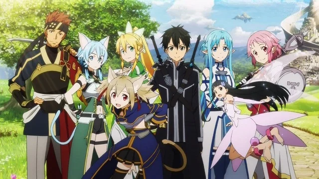
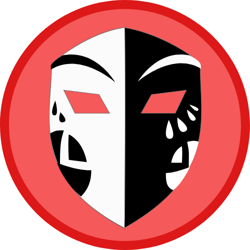
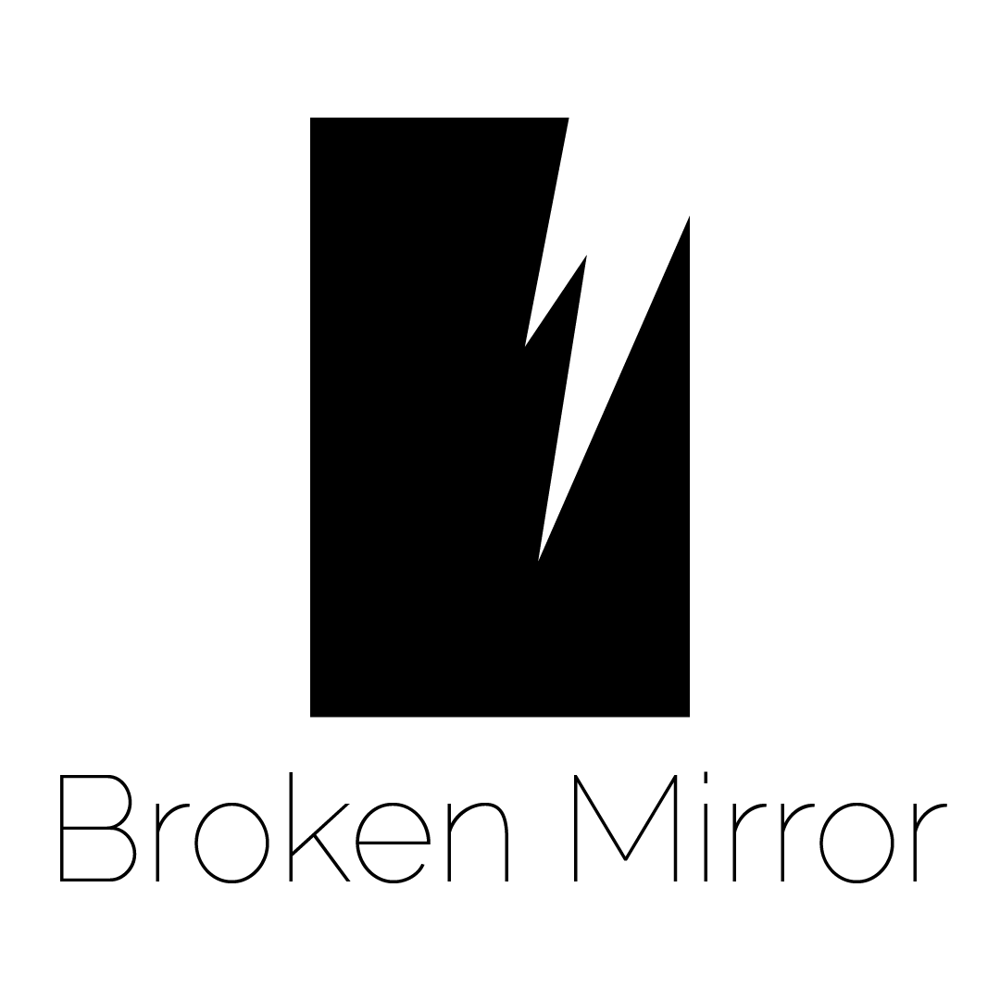
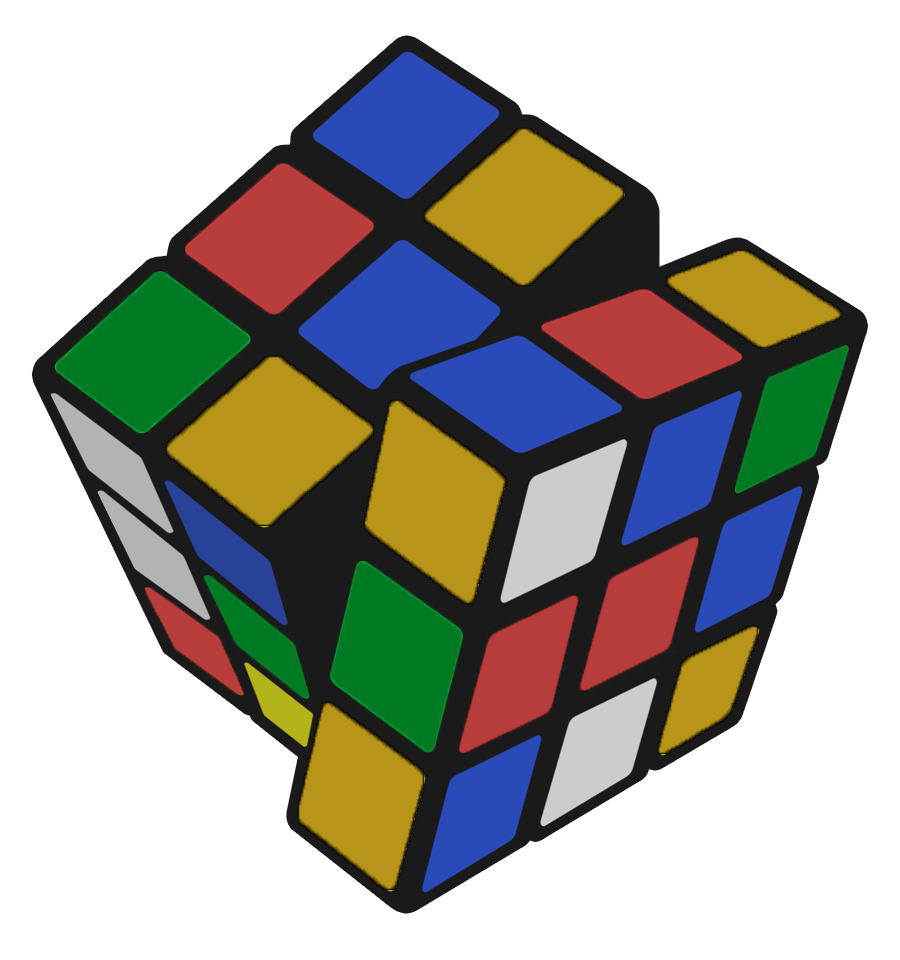
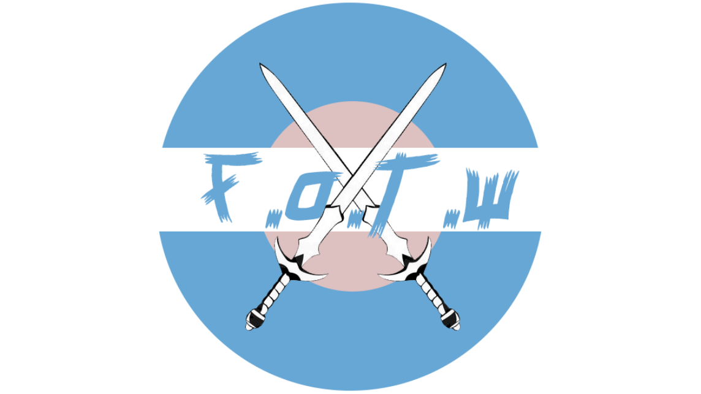

Contenus similaires
micro-visio
D'autres sites qui pourraient vous plaire
IA-Un avenir pas si rose ?
par Charles ManginClay

par Maëlle MarchalBroken Mirror

par Joris LinJ.A.R.V.I.S
par Jonas Morisot
Slow Down
par Zoé Louyot
Verax

par Claire OudotFuture.Of.The.World

par Ilias MachmoumteWar
par Sarah HadriUnfaced
par Benjamin LuganPolluting video games
par Nicolas LouisinLes DATA du CLOUD
par Julien Metzger